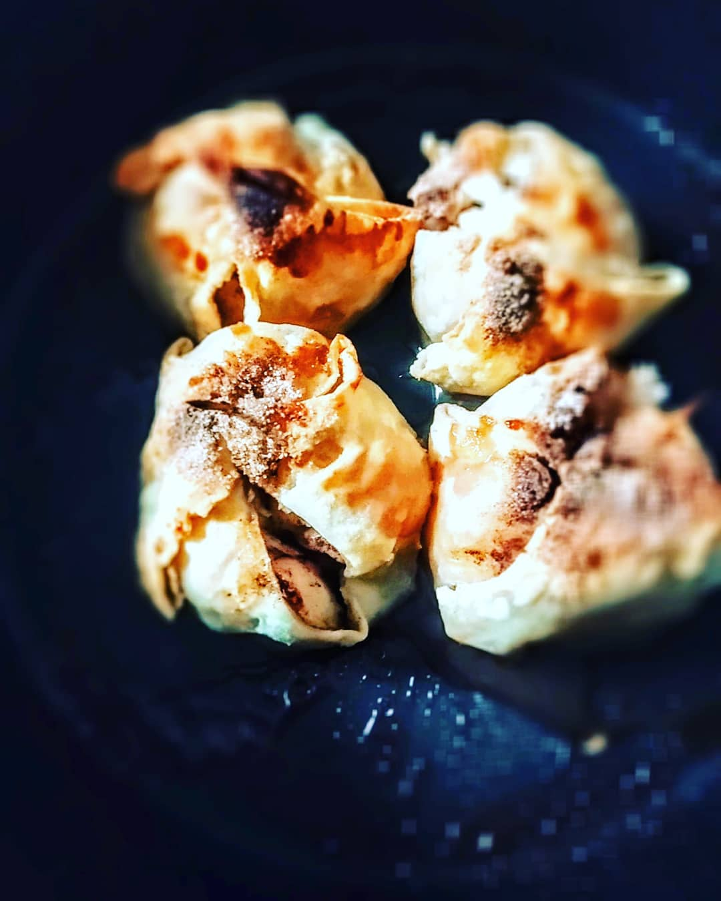

JABLKÁ V ŽUPANE 🍎👘
LIDL MA ZINFLUENCOVAL, SUSED NA SADOVEJ DODAL MATROŠ, JA MALA LÍSTKOVÉ CESTO V MRAZÁKU A RECEPT S PLNKU!!! NEBYL DÚVOD SA DO TEHO NEPUSTIT 🙈🤷
#jablkavzupane #appledessert #puffpastry #coconutfilling #cinnamon #vegandessert #autumn #plantbasedfood